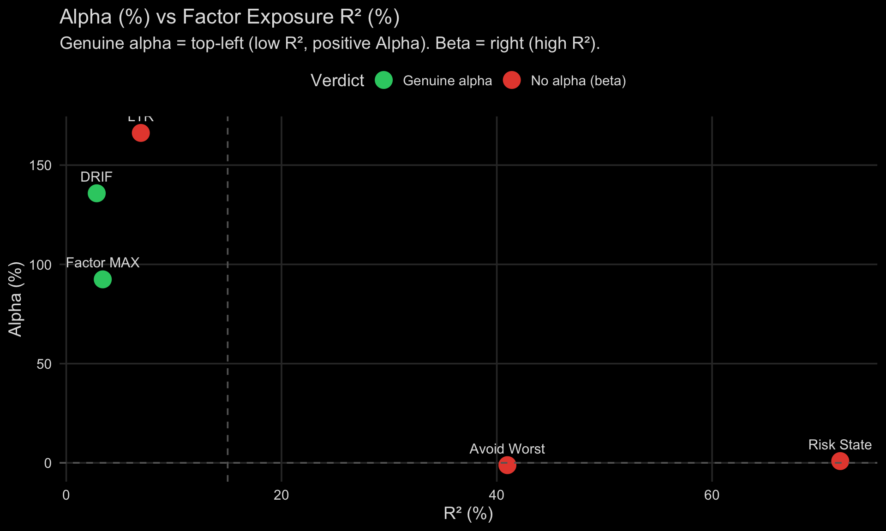
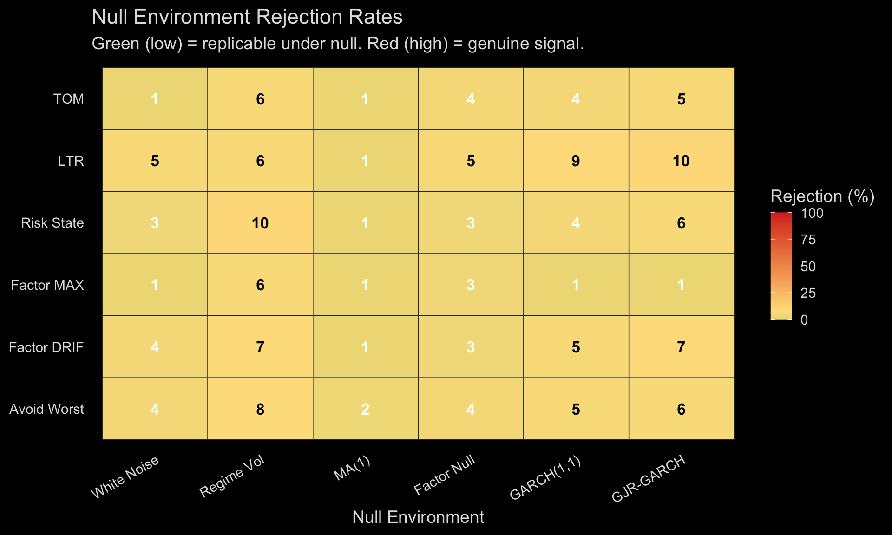
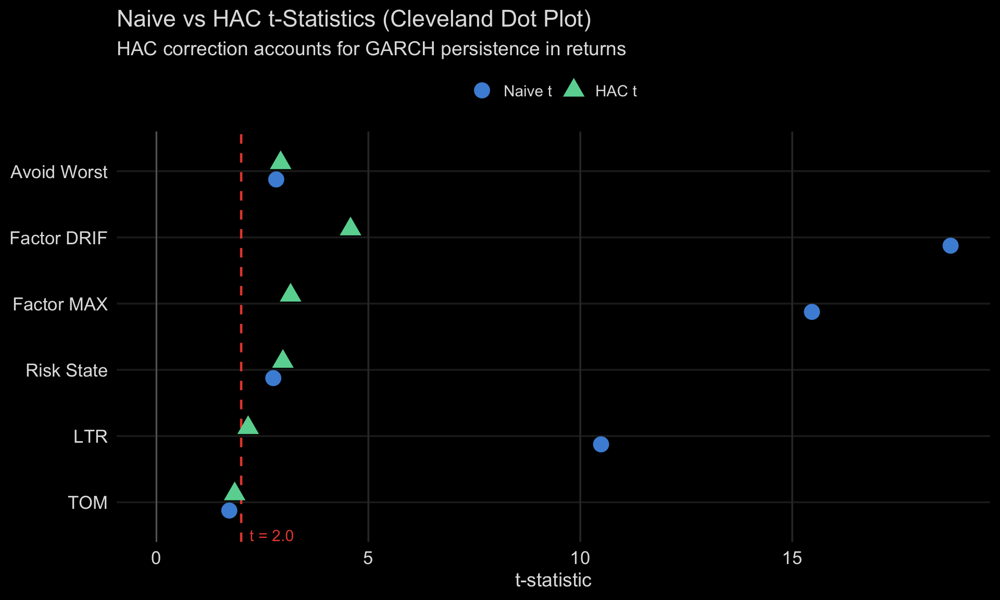

Falsification framework. Every strategy must survive multiple statistical tests before being considered genuine. A strategy that looks profitable may simply be disguised factor exposure (beta) rather than true alpha. This dashboard applies Harvey, Liu & Zhu (2016) and Lopez de Prado (2018) methodology.

Key insight: A strategy can have positive returns and still have zero alpha. If those returns come from market exposure (high R²), you can get the same exposure more cheaply via index funds.

A null environment generates synthetic return series with no genuine signal, but with realistic statistical properties. We test: “could a strategy generate the observed t-statistic just by chance in this environment?”
For each null environment, we generate M = 100 synthetic series, apply the strategy’s logic, and compute the HAC t-statistic. The rejection rate is the fraction that exceeds the observed t-statistic.
The 6 null environments (implemented in falsification.R):

Strategy performance with Newey-West HAC correction. Columns: Naive Sharpe = uncorrected annualised Sharpe; Ann Mean/Vol (%) = annualised return and volatility; Naive t = t-statistic assuming iid returns; HAC t = t-statistic corrected for serial correlation (GARCH persistence); NW Lag = Newey-West bandwidth (Bartlett kernel, auto: floor(4(T/100)^(2/9))), average lag: 7.2. All 5 strategies exceed the HAC t > 2.0 threshold, ranging from LTR (Cross-Sectional Momentum) (t = 2.24) to DRIF (Factor Rotation) (t = 6.09). Source: hd_hac_sharpe(), Ken French Data Library.*
Financial returns exhibit volatility clustering (GARCH persistence). Standard Sharpe ratios assume iid returns, which inflates the Sharpe by 20-30% on average.
The Newey-West correction (implemented in hd_hac_sharpe()):
Alpha (%) is the intercept — the annualised return not explained by any factor. R² (%) measures how much of the strategy’s variance is explained by known factors.
Decision rules (matching Verdict in the Scorecard):
Data source: Kenneth French Data Library, daily frequency. Implemented in hd_factor_null_test().
Testing 5 strategies inflates Type I error. The chance that at least one strategy exceeds t = 2.0 by pure luck is much higher than 5%.
K_eff (effective multiplicity):K_eff = K² / ||Σ||²_F — the spectral participation ratio of the pairwise correlation matrix. It measures how many truly independent strategies exist:
Harvey threshold: sqrt(2 * log(K_eff)) — the t-statistic a strategy must exceed to survive multiplicity correction at the 5% level. Based on Harvey, Liu & Zhu (2016), “…and the Cross-Section of Expected Returns.”
Delta-Z (IS-OOS gap):Delta-Z = max(t_IS) - max(t_OOS) — the gap between the best in-sample and best out-of-sample t-statistics. A large gap indicates overfitting:
In this framework, “in-sample” = HAC t-stat (strategy returns), “out-of-sample” = FF alpha t-stat (after removing known factor exposure). The OOS test is not a temporal holdout but a structural holdout — does the signal survive factor decomposition?
look-ahead-bias-prevention rule)execution-delay-sensitivity — alpha decay analysis)backtest-robustness — bootstrap CI)backtest-partitions — train/test/validation split)Simplified view: strategies as single nodes. 27 nodes, 38 edges in the full DAG. Click any strategy node to view its source code. Click diagram to zoom fullscreen.
graph TD
subgraph Factors["Fama-French Factors"]
HML["HML Value"]
SMB["SMB Size"]
Mom["Mom Momentum"]
RMW["RMW Profitability"]
Mkt_RF["Mkt-RF Market"]
end
subgraph Macro["Macro Signals"]
VIX["VIX Level"]
VTS["VIX Term Structure"]
VVIX["VVIX"]
Fed["Fed Rate"]
Infl["Inflation"]
end
subgraph Regime["Regime States"]
VolR["Vol Regime"]
RateR["Rate Regime"]
end
subgraph Signals["Strategy Signals"]
DRIF_S["DRIF Signal"]
FMAX_S["FacMAX Signal"]
LTR_S["LTR Signal"]
RSC_S["RSC Signal"]
VIX_S["VIX Overlay"]
end
subgraph Returns["Strategy Returns"]
DRIF_R["DRIF Return"]
FMAX_R["FacMAX Return"]
LTR_R["LTR Return"]
MKT_R["Market Return"]
end
subgraph Portfolio["Portfolio Outcomes"]
PORT["Portfolio Return"]
MDD["Max Drawdown"]
SR["Sharpe Ratio"]
end
subgraph Structural["Structural"]
Crowd["Factor Crowding"]
Decay["Premium Decay"]
Cost["Rebalance Cost"]
end
HML --> DRIF_S
SMB --> DRIF_S
Mom --> DRIF_S
RMW --> DRIF_S
HML --> FMAX_S
SMB --> FMAX_S
Mom --> FMAX_S
Mom --> LTR_S
SMB --> LTR_S
VIX --> VolR
VTS --> VolR
VVIX --> VolR
Fed --> RateR
Infl --> RateR
VolR --> RSC_S
VolR --> VIX_S
RateR --> LTR_S
DRIF_S --> DRIF_R
FMAX_S --> FMAX_R
LTR_S --> LTR_R
RSC_S --> MKT_R
VIX_S --> MKT_R
Mkt_RF --> MKT_R
Mkt_RF --> DRIF_R
Mkt_RF --> FMAX_R
Mkt_RF --> LTR_R
Crowd --> Decay
Decay --> FMAX_R
Decay --> DRIF_R
DRIF_R --> PORT
FMAX_R --> PORT
LTR_R --> PORT
Cost --> PORT
PORT --> SR
PORT --> MDD
VolR --> MDD
VIX -.->|"r=-0.17 VIOLATED"| HML
Node colours: Factors (blue) | Macro (gold) | Regime (orange) | Signals (purple) | Returns (green) | Outcomes (red) | Structural (grey). Yellow dashed = violated implication. Green = tested, holds. Source: plan_causal_graph.R.
Full DAG tab rendered: 2026-05-06 18:32:57 BST | commit: f858323
graph TD HML["HML Value"] --> DRIF_S["DRIF Signal"] SMB["SMB Size"] --> DRIF_S Mom["Mom Momentum"] --> DRIF_S RMW["RMW Profitability"] --> DRIF_S DRIF_S --> DRIF_R["DRIF Return"] Mkt_RF["Market Mkt-RF"] --> DRIF_R VIX["VIX Level"] -.->|"r=-0.17"| HML Decay["Premium Decay"] --> DRIF_R DRIF_R --> PORT["Portfolio Return"]
DRIF selects the best-performing FF factor each month. Loads on HML, SMB, Mom, RMW. Yellow dashed edge: VIX affects HML in crises (r=-0.17). Source: plan_drif.R.
DRIF tab rendered: 2026-05-06 18:32:57 BST | commit: f858323
Factor MAX selects the top-momentum factor. Premium has decayed >50% (#73). Source: plan_factormax.R.
LTR uses XGBoost for cross-sectional stock ranking. Loads on Mom + SMB. Rate regime feeds into signal. Source: plan_ltr_momentum.R.
What the DAG encodes: Every arrow is a causal assumption from our strategy pipeline — “X causes Y” or “X determines Y”. If the assumption is wrong, the arrow should be removed or redirected.
How to read the tests: Each conditional independence claim says “if our DAG is correct, then X and Y should be unrelated after controlling for Z.” A partial correlation near zero confirms the claim; a large partial correlation violates it.
Violated: HML ⊥ VIX (r = -0.17)The value factor (HML) and volatility index (VIX) are NOT independent. This means:
| Impact area | What it means | Action |
|---|---|---|
| DRIF strategy | DRIF loads on HML. During VIX spikes, DRIF underperforms MORE than the Vol_regime node alone predicts. | Consider reducing DRIF weight in crisis regimes |
| Multi-strategy portfolio (#52) | Diversification between VIX overlay and value-heavy strategies is LESS than K_eff suggests — they correlate in crises, exactly when diversification matters most | Recompute weights with crisis-conditional correlations |
| Tail independence (#55) | K_eff_crisis < K_eff_calm is expected — this finding explains why | Run hd_tail_keff() to quantify |
| DAG revision | Need either: VIX → HML edge (direct), or latent “Crisis_mode” → {VIX, HML} | Added VIX → HML edge (dashed yellow in diagram) |
Economic explanation: In crises, investors sell risky assets indiscriminately. Value stocks (high book-to-market) are often distressed firms — they get sold first. Simultaneously, VIX spikes as options demand surges. The correlation is not VIX causing value to fall, but both responding to the same flight-to-safety mechanism.
Temporal split finding: The HML-VIX link was stronger pre-2010 (r=-0.26) and has weakened post-2010 (r=-0.14). This is the opposite of the crowding hypothesis — the crisis-value correlation peaked during 2000-2010 (dot-com crash + GFC), not after factor investing became popular. The VIX-HML edge in the DAG is most relevant for crisis periods, less so in recent calm markets.
Causal DAG for the portfolio: 27 nodes and 38 directed edges, encoding causal assumptions across factors, macro signals, regime states, strategy signals, returns, and portfolio outcomes. DAG validity (acyclic): TRUE. Five conditional independence implications were tested via partial correlation: 4 hold (|r| < 0.15), 1 violated (|r| ≥ 0.15), 0 skipped (data unavailable). Implications with |r| ≥ 0.15 suggest the causal structure requires revision. HML-VIX correlation by period: Pre-2010 r= -0.262 (n= 60 ); 2010+ r= -0.139 (n= 194 ); Full r= -0.167 (n= 254 ).Source: R/plan_causal_graph.R.